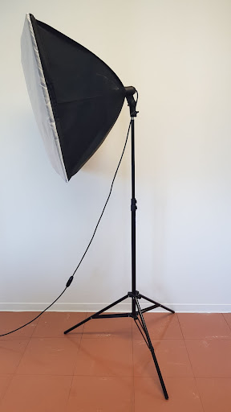
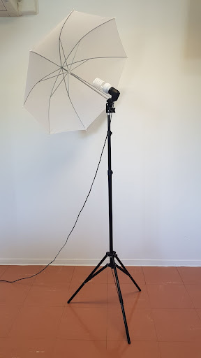
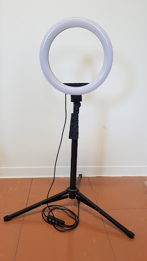
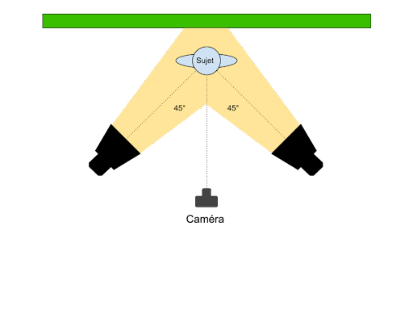

La gestion du système lumineux lors d’un enregistrement au studio est très importante car elle va fortement impacter la qualité du rendu et notamment si le fond vert est utilisé. En effet, pour une bonne prise vidéo il faut que le sujet soit bien éclairé, on va ainsi vous décrire nos astuces pour un éclairage optimal avec le matériel disponible.
Notre projet visant à l’élaboration de contenus éducatifs, l’éclairage sera vu de manière à fournir une vidéo avec un éclairage de base, fixe et non artistique dans l’idée de permettre la création de cours, de vidéos de formations ou de vidéos explicatives.
En studio, il y a besoin d’une source lumineuse constante de manière à ce que les réglages soient efficient du début à la fin de la session d’enregistrement. La lumière ambiante ne rentre donc bien évidemment pas dans cette catégorie de lumière puisqu’elle varie tout du long de la journée et selon la météo. Cependant, elle peut dépanner dans le cas d’une vidéo courte et en une seule prise, sans fond vert.
Très fortement déconseillés, ils font sauter l’image lors de la prise vidéo.

Les softbox permettent une diffusion de lumière douce et constante, plus globale et moins localisée. Ainsi elles permettent un éclairage assez homogène du sujet mis en avant.
Pour placer les softbox il faut vérifier que la lumière générée englobe bien tout l’espace souhaité (objet, personne, tableau…). Afin que la lumière soit plus douce il est conseillé de les placer aussi près que possible du sujet, attention à ce que le sujet ne soit pas pour autant surexposé ou bien que les softbox apparaissent dans le champ de vision de la caméra.

Facilement reconnaissables, ces lampes permettent une diffusion de la lumière réglable. En effet, plus ton parapluie sera proche de la lumière (de l’ampoule), plus tu auras une lumière puissante et douce. Tout comme les softbox, les lampes parapluie permettent d’obtenir une lumière douce et diffuse cependant ils vont couvrir une zone plus large.

La ring light est une lampe plus adaptée pour capter un sujet unique et fixe. Elle permet de mettre en valeur son visage et d’obtenir une qualité qui nécessite peu de post-traitement.
Ainsi il est conseillé de l’utiliser avec la caméra en son centre en face du sujet et la mise au point effectuée sur les yeux de la personne qui s’exprime.
Cet apport lumineux peut être très utile lors d’une prise en vidéo rapprochée avec une unique personne face à la caméra. Elle permet de mettre un accent de lumière sur la personne ou bien sur un objet. Elle est ainsi très utile lorsque vous souhaitez mettre quelque chose en avant ou que vous êtes seul devant la caméra. Attention tout de même à bien la régler pour ne pas apparaître trop blanc.
Si vous voulez donner un petit effet de style, vous pouvez utiliser les filtres colorés.
En vue de l’espace dédié au studio vous serez vite limité dans la mise en place des lumières notamment si vous souhaitez mettre en place un éclairage arrière. Nous allons donc vous présenter nos propositions simples et efficaces pour être correctement éclairés dans l’espace qui nous est offert.
Pour bien rendre la vidéo et que la qualité soit optimale il faut que le sujet soit entièrement éclairé et de manière uniforme, éviter la surexposition qui risque de gommer l’image et surtout les ombres qui diminuent la netteté et qui peuvent entraîner des désagréments lors du visionnage de la vidéo. De plus il faut bien faire attention au fait que les systèmes d’éclairage n’apparaissent pas dans le champ de vision des caméras ni en reflet sur les potentiels objets utilisé lors de l’enregistrement (ex : tableau blanc)
Les risques d’un mauvais éclairage :

Le fond vert nécessite un éclairage constant et homogène. Ainsi, pour une mise en place simple d’une lumière suffisante et homogène, nous vous conseillons d’utiliser principalement les deux softbox en position latérale à hauteur de caméra, voir même un petit peu en dessous pour limiter les ombres sous les bras.
Si la lumière mise en place suivant le schéma ci-dessus ne suffit pas, vous pouvez rajouter les parapluies entre les softbox et le fond vert de manière à ce qu’il récupère bien toute la lumière et qu’il soit de meilleure qualité lors du changement de fond sur l’OBS ou première pro.
Dans le cas du tableau blanc il faut vraiment faire attention aux reflets potentiels de la lumière qui risqueraient de rendre certaines zones illisibles à la vidéo. Ainsi les softbox peuvent être positionnée de manière plus rasante, c’est-à-dire avec un angle proche de 90° par rapport à la caméra. Vous pouvez aussi les régler à une hauteur plus basse que la caméra mais il faut faire attention aux ombres (même si cela engendrera moins de problèmes que sur le fond vert, les ombres peuvent nuire au visionnage ou à la qualité du rendu);
Afin d’éclairer les deux zones en même temps vous allez devoir bricoler un peu avec les différents éclairages. Tous seront nécessaires. Car l’espace disponible ne permet pas de filmer les deux scènes en même temps et correctement.
Si vous êtes seul à l’écran et que vous n’allez pas bouger de votre position pendant tout l’enregistrement vous pouvez utiliser la ring light ou le spot, elle vous éclairera comme il le faut et mettra en valeur votre visage.
Si vous préférez, vous pouvez substituer les softbox par les parapluies.
Bien vérifier lors de la mise en place :
Astuces :
Sources :
Softbox : https://www.lesverygoods.fr/comparatif/comment-choisir-sa-softbox-pour-un-eclairage-professionnel_a285 https://eclaire-moi.fr/comment-tirer-profit-de-sa-softbox/
Ring light : https://eclaire-moi.fr/comment-utiliser-un-ring-light/
Vidéos : https://www.youtube.com/watch?v=NoSVsZ2ZV3o https://www.youtube.com/watch?v=PjeppHvknY4